Международная Академия Aldo Coppola в РоссииМосква
АкадемияAldo Coppola
Итальянские техники стрижки, окрашивания и укладки — для парикмахеров, которые хотят работать в философии Aldo Coppola. Учат арт-директора из Италии и стилисты, прошедшие обучение в Милане.
Техники показывают и отрабатывают на манекенах: так вы осваиваете оригинальную форму стрижки, окрашивания и укладки и можете повторять её самостоятельно после обучения. По окончании каждого курса выдаётся сертификат Международной Академии Aldo Coppola в России.
ОпытЕдиный стандарт
Более двадцати лет подготовки специалистов по одной методике бренда.
НоваторствоЗнания из Милана
Техники приходят со сцены Live Show, где команда Aldo Coppola показывает коллекции дважды в год.
ТехнологииФирменные аксессуары
Стрижки и окрашивание с аксессуарами Aldo Coppola: Dandy, Papesa, Visiera, Miami Beach, Flamingo.
Основной курс
Accademia Project — три ступени
Курс для парикмахеров с опытом работы от двух лет. Каждая ступень — 4 стрижки, 4 укладки и 2 окрашивания. При оплате всех трёх ступеней сразу — скидка 15%.
Ступень I
Accademia Base
Первая ступень: основные принципы построения формы стрижек, укладок и окрашиваний Aldo Coppola. С неё начинается путь в философии бренда.
4стрижки
4укладки
2окрашивания
Инструменты: ножницы прямые, филировочные одно- и двусторонние; бритва филировочная; клипсы и зажимы; расчёски «геркулес», «хвостик», «рыбья кость», брашинги; фен.
Тренинги помогают поднять уровень и освоить новые техники на практике. Перед ними рекомендуется пройти Accademia Project. Нажмите на курс, чтобы увидеть программу.
Окрашивание на аксессуарах5 фирменных техник59 000 ₽
Техники окрашивания Aldo Coppola на аксессуарах. Изучение и отработка пяти техник:
DandyPapesaVisieraMiami BeachFlamingo
Мужские стрижкиФранческо Монтани, ведущий преподаватель53 000 ₽
Мужественные, спортивные, стильные стрижки, которые креативная команда Aldo Coppola в Милане разработала для домов мод Dsquared2, Giorgio Armani, John Richmond и Valentino.
демонстрация и отработка 4 техник на манекенах
Укладки Aldo Coppolaклассика и тенденции Live Show40 250 ₽
Классические и актуальные укладки с последних показов в Милане, а также ежедневные укладки феном. Программа обновляется новыми техниками.
4 укладки
Волны и локоныот 1920-х до сегодня40 100 ₽
История локонов с 1920-х годов и сложные укладки с эффектом волн, завитков и локонов.
Окончил Académie Haute Coiffure Française в Париже и Университет IUAV в Венеции. Работал в Париже, Кремоне и Милане, владеет итальянской, британской, французской и американской школами. Больше 25 лет хранит философию Aldo Coppola. Ведёт Accademia Project, укладки, мужские и женские короткие стрижки.
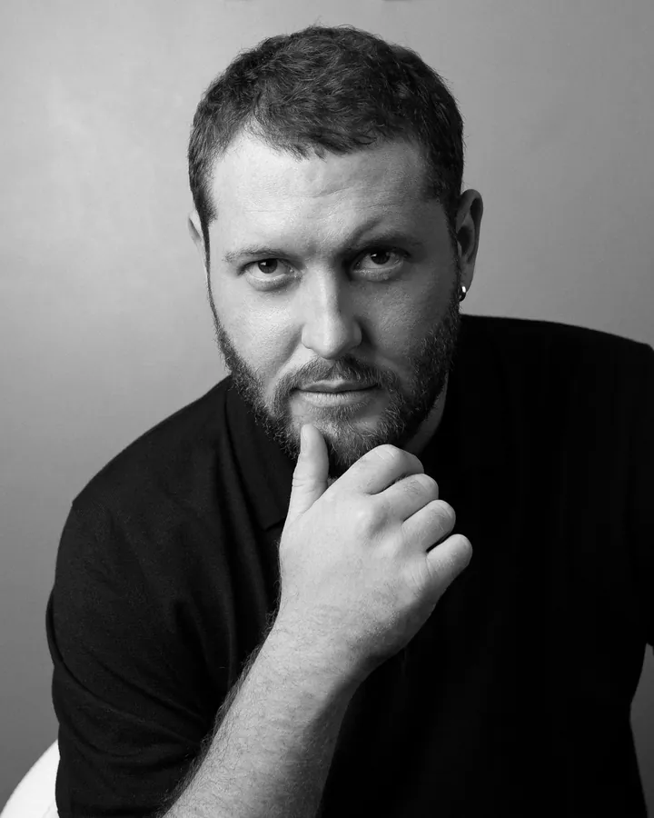
Джузеппе Кастальдиарт-директор, ТЦ Времена годаПодробнее
Начал карьеру в Aldo Coppola в Италии в 13 лет, работал в Aldo Coppola London и Monaco, больше десяти лет — в Aldo Coppola Russia. Участвует в разработке новых тенденций бренда. Ведёт тренинг «Тренды модных стрижек».
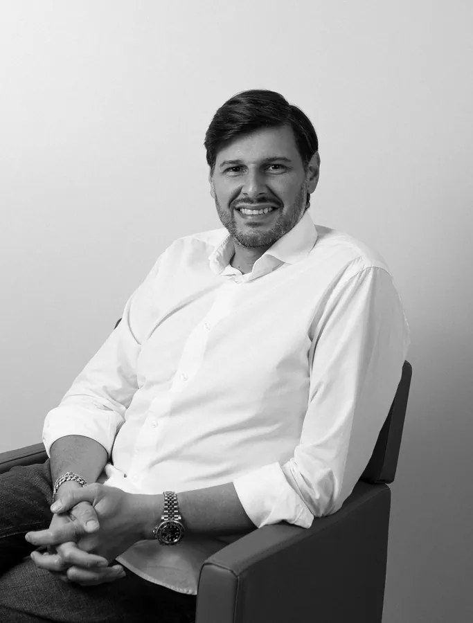
Альберто Санвидоарт-директор, ЖуковкаПодробнее
Окончил профессиональную школу парикмахерского искусства в Милане, десять лет работал в Aldo Coppola Milan и около десяти лет — в Москве. Ведёт тренинг Prive: стрижки и окрашивание на аксессуарах.
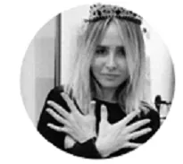
Янина Кулаковаарт-директор, БЦ ВЭБ РФПодробнее
Училась в Академии Aldo Coppola в Милане. С командой бренда создавала образы на показах Giorgio Armani, Dsquared2, Valentino, Richmond и для журналов Tatler, Vogue, Harper's Bazaar, Elle. Ведёт курс вечерних причёсок и укладок.
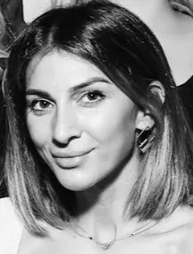
Зарема Нуцалхановаарт-стилист, БЦ ВЭБ РФПодробнее
19 лет в индустрии красоты. Училась в Академии Aldo Coppola в Милане, работала в Академии A.C. Milan и ассистировала самому Альдо Копполе в его миланском салоне. Готовит новых сотрудников во внутренней академии, ведёт тренинг по технике Shatush.
Работы
Почерк Aldo Coppola
Стрижки, цвет и укладки из коллекций бренда и мастер-классов Академии. Листайте вправо.
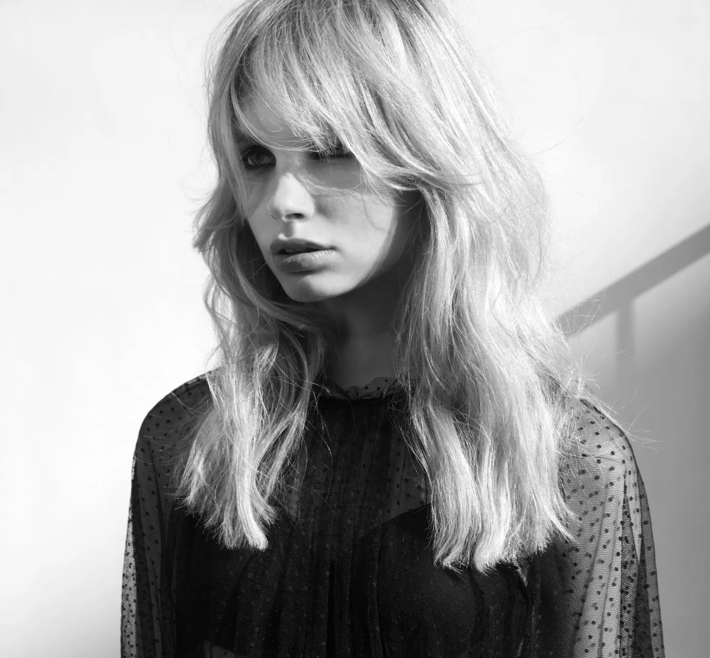
Коллекция Aldo Coppola
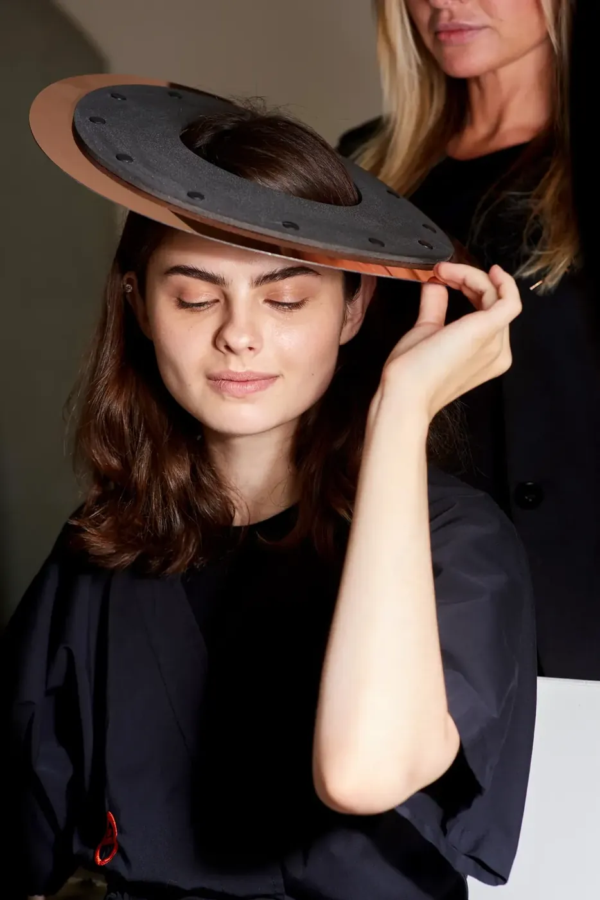
Стрижка на аксессуаре
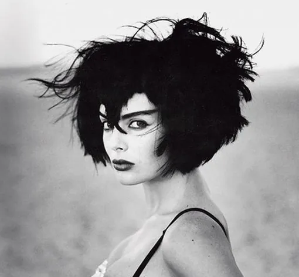
Короткая форма
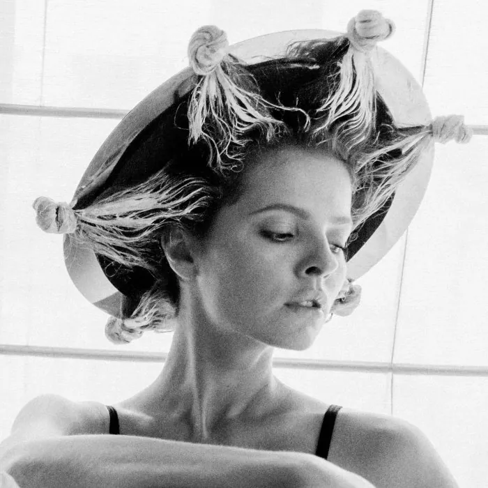
Окрашивание на аксессуаре
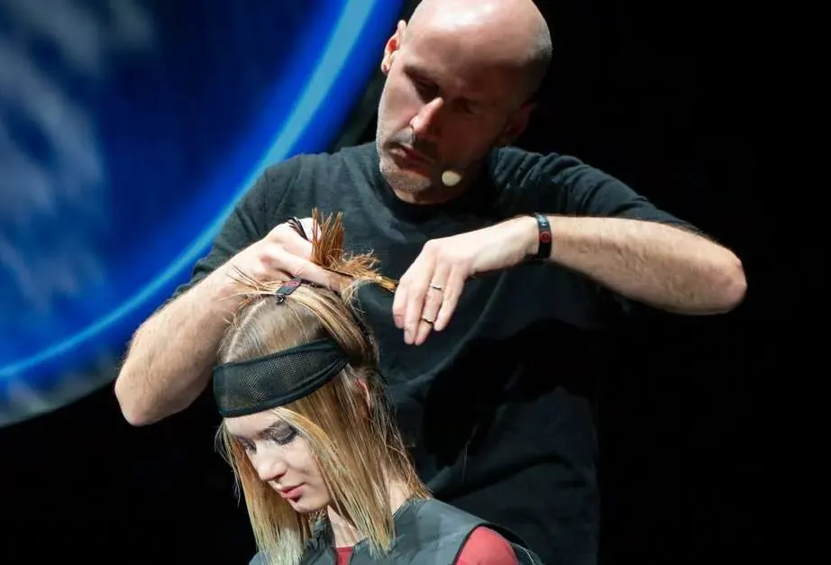
Live ShowВолны
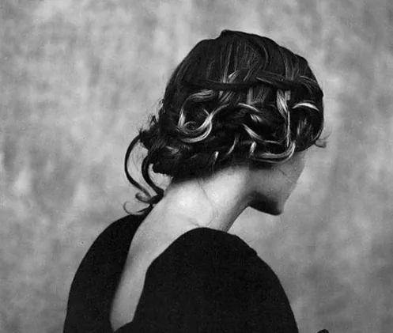
Вечерняя причёска
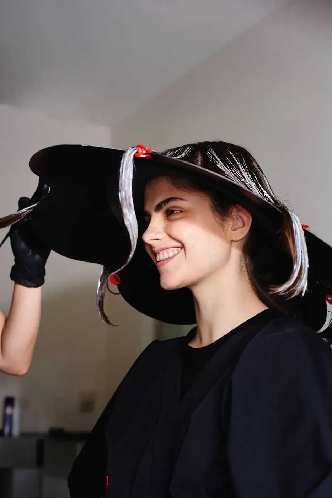
Цвет на аксессуареМужская стрижкаЛоконы
Привилегии
Учиться выгоднее
Скидки не суммируются с другими предложениями — условия уточняйте в Академии.
15%
Приходи снова
Закончили курс — скидка 15% на любой другой курс в течение трёх месяцев.
15% + 10%
Рекомендуй коллеге
Вам — 15% на следующее обучение, коллеге — 10% на первое.